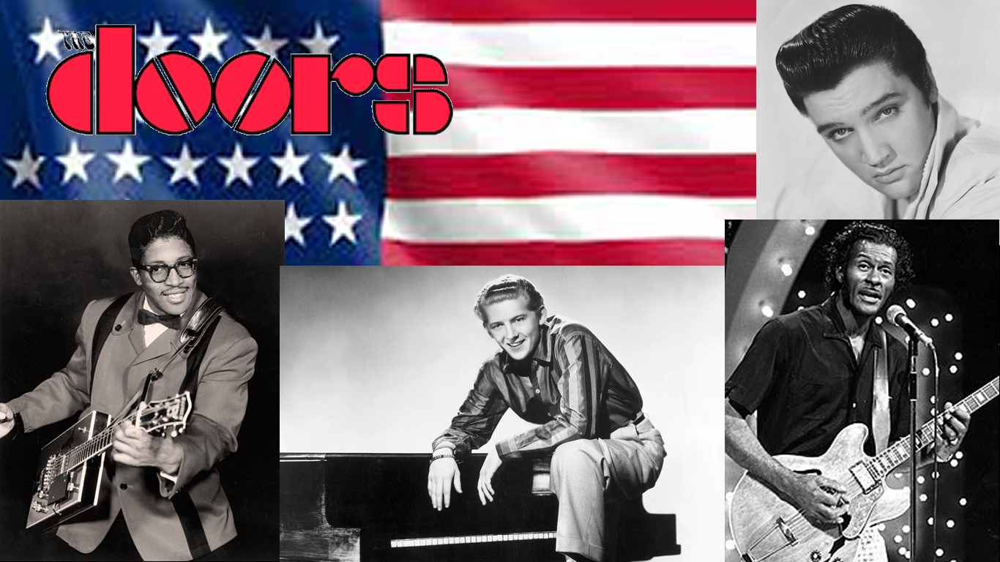

La tendencia punk, así como el rock, el grunge y el gótico hoy son tema de conversación. Su estética poco a poco vuelve a dominar las redes sociales poniéndolos como ejes centrales de una manera de vestir de muchos jóvenes que están redescubriendo a bandas enigmáticas Sex Pistols o Nirvana y, aunque pareciera que este tipo de estéticas habían quedado en el olvido, la década de los noventa y ochenta vuelven a estar de moda con el regreso de estas extravagantes formas de vestir como moda en la decada de los 2000.
